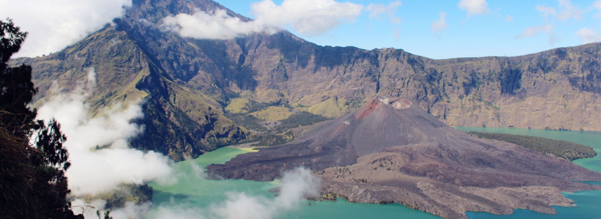
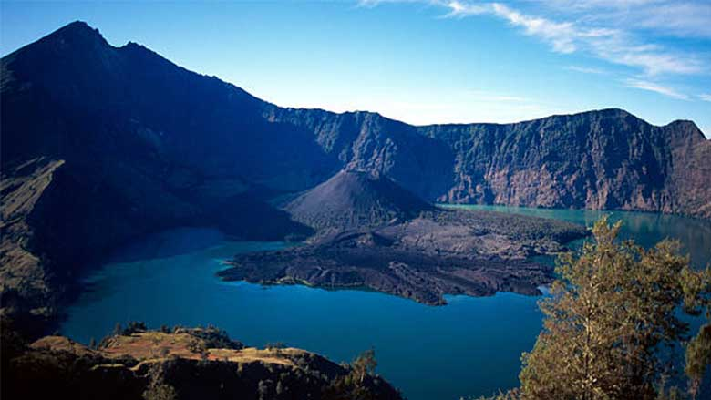
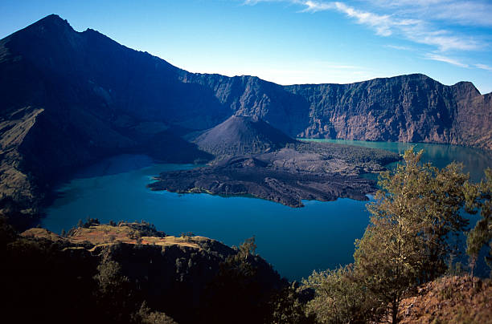
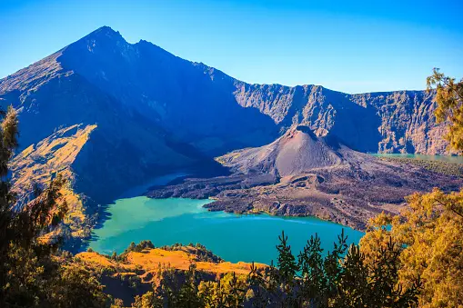
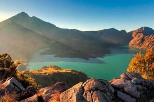

Information & Gallery
Explore our ecosystem, tracking highlights, and licensed operational details.






Premium trekking experiences tailored for adventurers from the Netherlands and beyond.
Certified guides and high-quality equipment ensuring European safety standards.
We practice "Leave No Trace" to preserve Rinjani's beauty for future generations.
Experience comfort in the wild with our deluxe camping setup and nutritious meals.
Choose the adventure that fits your schedule.
The complete experience: Summit sunrise, Segara Anak lake, and hot springs.
Perfect for fit trekkers with limited time. Reach the top of Indonesia.
A more relaxed trek with stunning sunset views over the crater lake.
Express trekking for fit hikers. Reach the Summit of Rinjani (3,726m) and return via the same savannah route.
The complete adventure. Summit sunrise, descend to Segara Anak Lake & Hot Springs, finish in Senaru.
Enjoy Rinjani at a slower pace. More time at the Lake, Hot Springs, and caves. Perfect for photography.
Experience Lombok with a purpose. We craft personalized adventures that not only thrill but also respect the environment and support local communities. Our strict ‘leave no trace’ ethos and genuine passion for the island’s culture and nature set us apart as the premier eco-trekking provider in 2026.
The optimal time to trek Mount Rinjani is during the dry season, from April to November. During this period, weather conditions are generally favorable, trails are safer, and the sunrise views from the summit are spectacular.
Yes, all trekkers require an official permit to enter Gunung Rinjani National Park. But don’t worry about the logistics—we’ve got it covered! Our tour packages include all permit arrangements and entrance fees, so you can focus 100% on the adventure.
In our standard basic packages, pre-trek accommodation is not included. We keep costs competitive as many guests prefer to book their own stay or arrive in Senaru on the trek day. However, for our VIP Packages, we can arrange luxury accommodation upon request.
Our group size varies depending on the tour package. On average, you’ll be trekking with a small, intimate group of 4-6 people. We require a minimum of 2 people to run a trek, ensuring a personalized, safe, and social experience for all hikers.
Here is the breakdown to help you choose:
📍 Sembalun Route (Best for Summit):
Ideal for summit enthusiasts! This trek takes you closest to Peak Rinjani (3726m), traversing open savanna terrain from the start to the Sembalun Crater Rim. The panoramic views are breathtaking.
📍 Senaru Route (Best for Scenery):
Ideal for those who love lush nature! This trek takes you through tropical rainforests, offering stunning views of the Segara Anak Lake from the Senaru Crater Rim. The tranquil atmosphere and shade make for a refreshing experience.
Yes, Mount Rinjani is accessible to beginners, provided you have a good level of fitness. We offer various routes, including the 2D1N Senaru Crater Rim trek, which avoids the difficult summit climb—perfect for beginners and families looking for a rewarding experience without extreme exhaustion.
We understand the importance of good food! Our porters are excellent bush-chefs. We serve freshly cooked meals 3 times a day, including Indonesian fried rice, noodle soup, chicken curry, fresh fruits, and plenty of hot ginger tea/coffee to keep you warm.
On the mountain, facilities are basic. However, Rinjani Nature provides a private toilet tent for our group at each camping area to ensure privacy and hygiene. We strictly follow hygiene protocols to keep the mountain clean.
Ready to start your adventure? Get in touch.
Sembalun, Lombok Timur, NTB, Indonesia
info.rinjaninature@gmail.com
+62 878 2012 8581
Explore our ecosystem, tracking highlights, and licensed operational details.




